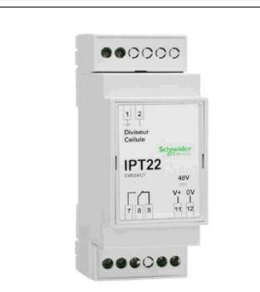
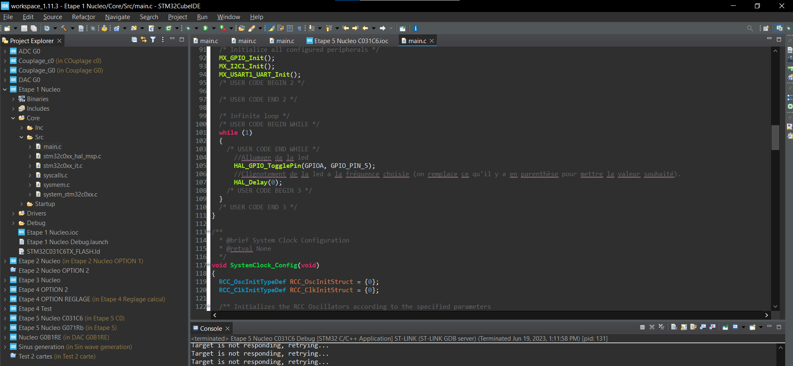
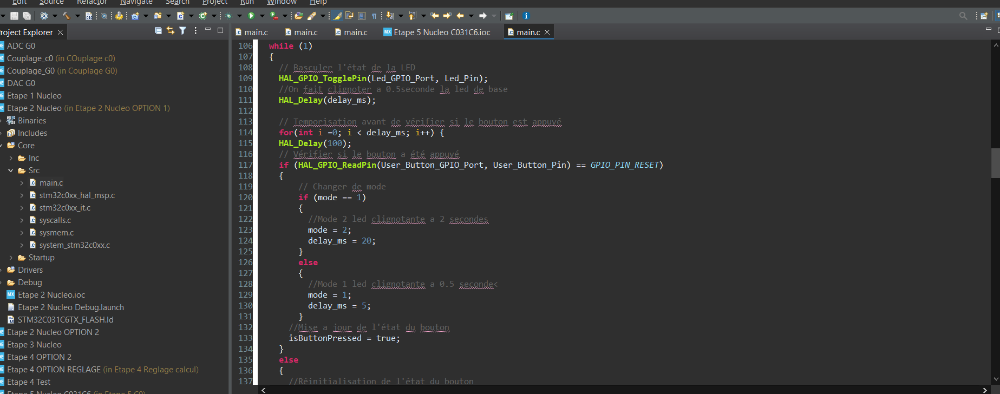
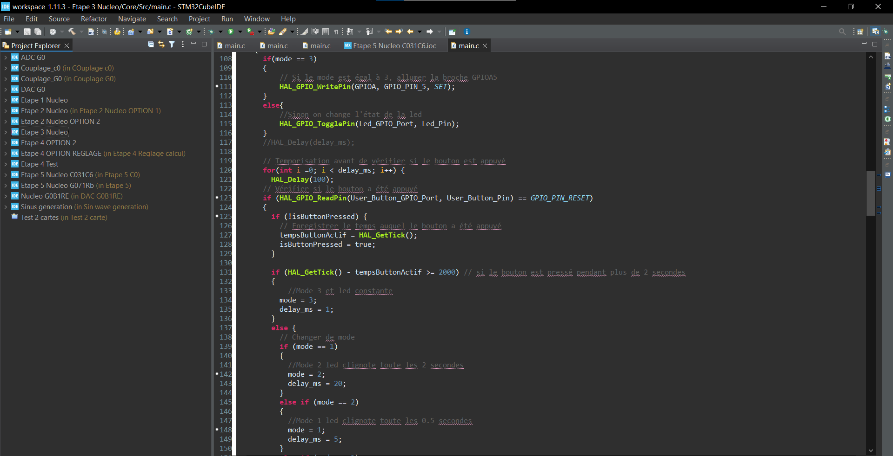
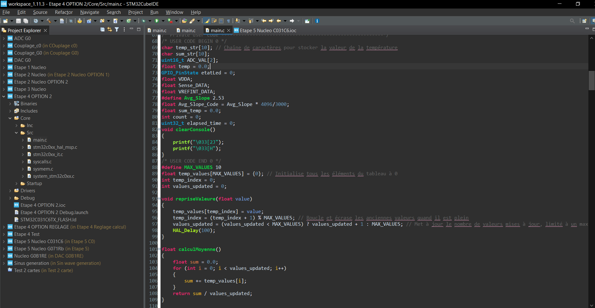
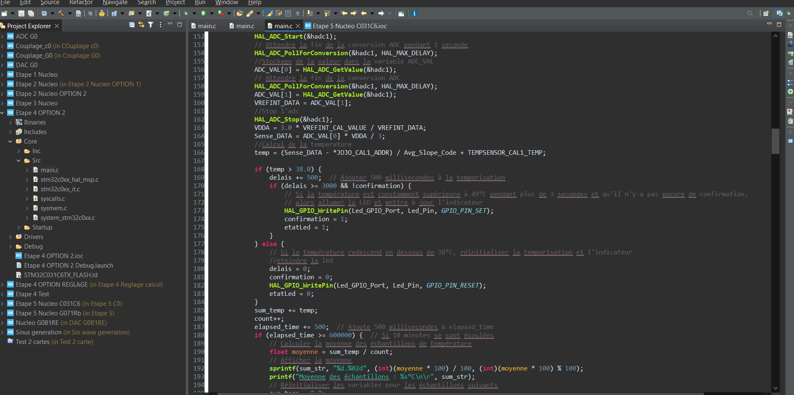
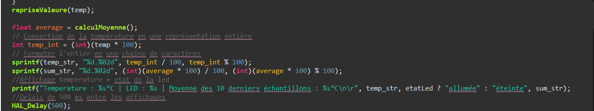
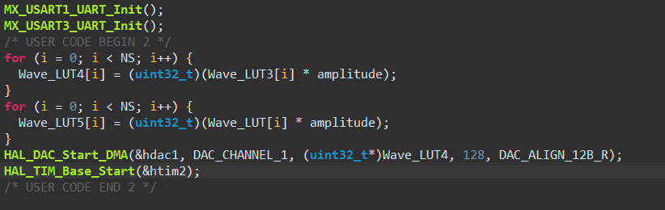

Missions et projets
Récapitulatif des misions et projets effectués durant le stage
Ceci est un récapitulatif principalement en image des projets et missions réalisés tout au long de ce stage !

Tout d'abord mon stage consiste à faire une migration du code de l'IPT ci dessus. Actuellement le code était sur de l'assembleur donc un vieux language qui n'est casiment plus utilisé de nos jour. Ma mission principale est de migré ce code assembleur en C, pour ceci j'ai à disposition différentes cartes de test ou je m'éxerce et je fait en très grosse partie le code que je n'aurais plus qu'a injecté et adapter légèrement suivant la configuration du produit. Voici maintenant en image différentes étapes pour ma mission, Étape n°1 :

Sur l'image ci dessus on fait simplement clignoter une led à une fréquence définie (Le délais est en millisecondes)
Étape n°2 :

Sur l'étape 2 on a plusieurs choses en même temps, géstion de la LED avec un bouton poussoir qui nous permet de changer la vitesse de clignotement de celle-ci.
Étape n°3 :

Sur cette etape on a toujours la gestion de la led avec le bouton seulement avec quelque possibilité en plus, on peut maintenant en restant appuyer 2 secondes sur le bouton faire en sorte que la LED reste fixe, puis si on rappuie on repasse en changement de mode
Étape n°4 :

Cette étape est gigantesque je l'ai donc mise en plusieurs partie, ici on retrouve les fonctions ainsi que déclarations de variables !

Ici on a plusieurs chose encore une fois, on récupère les valeurs de l'ADC(Analogic Digital Converter) pour pouvoir mesuré la température du capteur interne de la carte stm32. Puis on éffectue le calcul de la température en fonction des constante et valeurs récupérée au préalable. Une fois ceci fait, on établi des seuil de température qui déclenche la LED si ils sont depassé pendant un certain temps. Puis on fait une moyenne de température sur les 10 dernière minutes et on l'affiche dans la console.

Enfin on fait une moyenne circulaire ou glissante sur les 10 derniers échantillons de température. On convertis toute ces valeurs et on affiche enfin la température, l'état de la led ainsi que la moyenne circulaire.
Pour finir l'étape n°5 :

Enfin on à crée un tableau de valeur pour crée un sinus demi alternance positif au dessus puis on utilise un timer ainsi que le DAC(Digital Analogic Converter) Pour générer un signal sinus demi alternance positif.
Pour cette partie on branche deux cartes ensemble pour que l'une génère et l'autre "décrypte" le signal, j'ai donc fait un branchement entre les deux cartes en raccordant les deux masses ensembles ainsi que les pins d'envoi et de réceptions apropriés.

C'est tout pour le moment pour ce projet, sachant que je suis à la dernière étape souhaité avant de migré le code sur le vrai produit.
Merci d'avoir lu jusqu'ici !